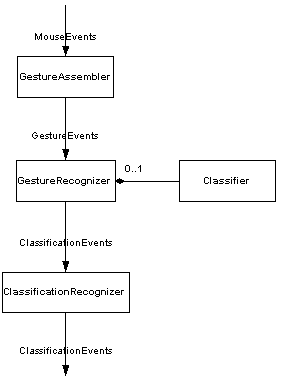
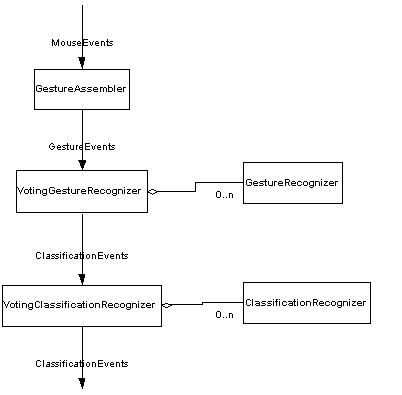

This package provides a recognition framework in which modular recognition elements can be combined in useful
ways. The class RecognitionEngine abstracts the package by providing a facade over the entire recognition process.
|
 |
 |
|
Recognition engine UML diagram |
Recognition engine using voting recognizers |
The architecture of the recognition system is composed of component-like building blocks. There are three major stages in the recognition process: gesture assembly, gesture recognition and reclassification.
Mouse events are taken as input into the system and assembled into gestures consisting of one or more pen strokes. This stage is embodied by the GestureAssembler class.
More specifically, GestureAssembler provides support for multi-stroke gestures as follows. When GestureAssembler receives a mouse pressed event, it starts collecting points until a mouse released event happens. The points collected are packaged into a PenStroke object. If the next mouse pressed event is received within a certain period of time after the previous stroke, then this becomes the second stroke in a gesture, and so on. If no mouse pressed event is received within a certain period of time after the previous stroke, then the gesture is completed and a gesture event and a change event is emitted. The default between-stroke waiting period is set to 500 ms.
During this stage of the recognition process, gestures (either fully or partially completed) are analyzed and recognized, producing classifications. This process can be done either with or without knowledge of the application. The stage is embodied by the GestureRecognizer class.
ClassifyingRecognizer is a type of GestureRecognizer. It uses a generic pattern classifier to recognize gestures and generate [type, confidence] pairs for each gesture type that it has been trained with. In the current implementation, there are two steps that are performed on a gesture before it is classified. The first step is preprocessing to remove noise and reduce gesture complexity (an "approximation by line segments" [1] technique is used here). The second step is feature extraction which generates a set of features from the gesture. This set of features is input to the classifier to see how closely the set of features resembles a class. Feature extractors are one way that the recognition process can be customized or enhanced by the user. We provide a number of general feature extractors in the package, but these can be replaced or extended by the user to tune the recognition. The default feature extractors used in ClassifyingRecognizer are:
The first 9 features are taken from Rubine's paper. [2]
Finally, VotingGestureRecognizer is a composite GestureRecognizer which allows multiple gesture recognizers to "vote" on the classification of a gesture. This way trained reusable gesture recognizers such as ClassifyingRecognizer can be used alongside specialized or application-specific gesture recognizers such as diva.sketch.toolbox.ScribbleRecognizer.
Classifications given by the second stage of the process are reclassified using contextual information. The result is output to the application. This stage is embodied by the ClassificationRecognizer interface, which is analagous to GestureRecognizer except that it processes ClassificationEvents instead of GestureEvents. The trait of a ClassificationRecognizer is that it performs recognition based on the result of other recognizers. Among other things, it can be used to implement a high-level recognizer as described in [3, 4].
[1] "An On-line Character Recognition Aimed at a Substitution for a Billing Machine Keyboard" Hanaki, Temma, Yoshida, Pattern Recognition, Vol.8, pp63-71, 1976.
[2] "Specifying Gestures by Example" Dean Rubine, Computer Graphics, Volume25, Number4, July 1991.
[3] "Pen-based Graphical User Interfaces for Conceptual Sketching" Rui Zhao, International Conference Proceedings, 1994.
[4] "Recognizing and Interpreting Diagrams in Design" Gross, M.D. In T. Catarci. M. Costabile, S. Levialdi, G. Santucci eds., Advanced Visual Interfaces '94 (AVI '94), ACM Press.